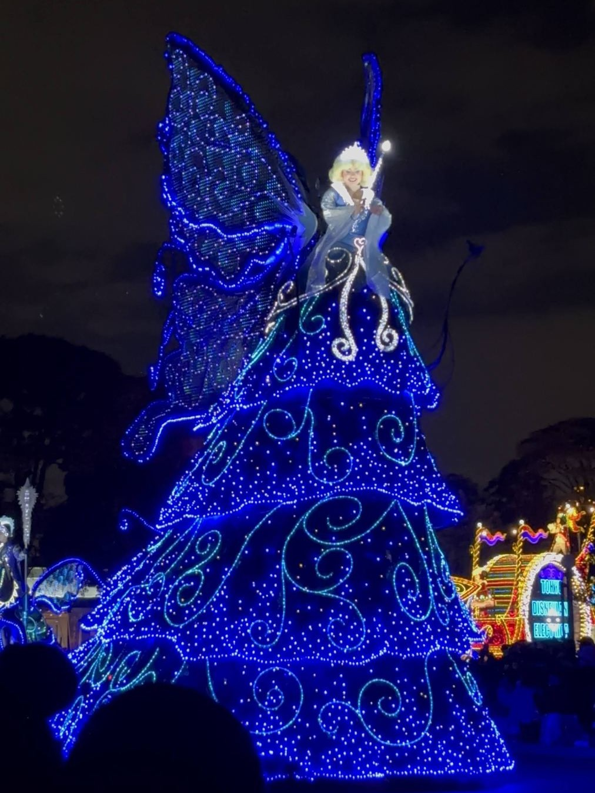
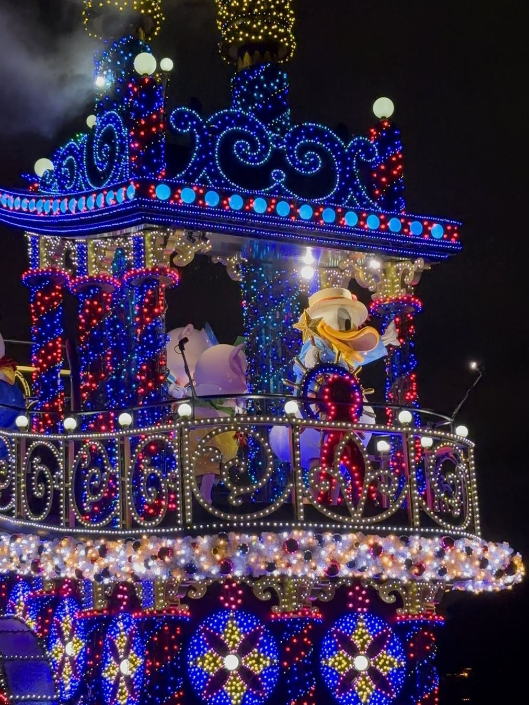
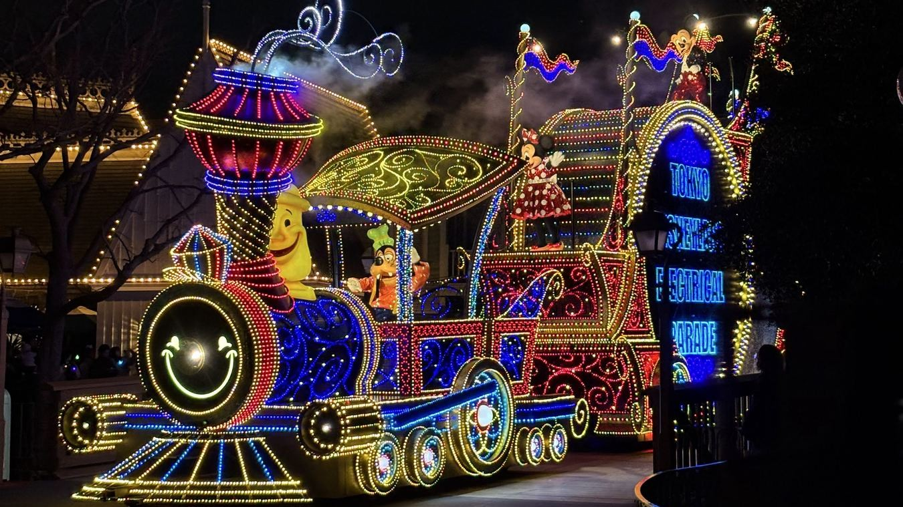

Electrical Parade
漆黒の闇をキャンバスに変えた、夢の開拓者たちの温かな情熱の記録沿道にフロートが近づくたび、聞こえてくる旋律が変わります。東京の夜へと続く光と音の旅は、フロリダの湖畔で始まりました。
I. From Water to Street
漆黒の湖畔から始まった、光の魔法の第一歩
夜のパレードルートで待っていると、おもちゃを思わせる電子音が近づき、そのあとから無数の灯りが道に現れます。東京でおなじみのこの光の列には、水の上を進んでいたころの面影があります。始まりは1971年秋、フロリダの湖でした。
当時エンターテイメントを率いたボブ・ジャニが目を留めたのは、夜になると暗闇に包まれる広い湖畔です。そこに光るスクリーンを浮かべて進ませたのが『エレクトリカル・ウォーター・ページェント』でした。水辺で人気を集めたその光景を、イマジニアたちはアナハイムの通りに移そうとします。
当時、夜のパークを彩るのは花火やイルミネーションでした。灯りを載せたフロートが自分の力で道を曲がり、次々に観客の前を通る夜のパレードは、新しい試みです。湖畔と同じように、道を包む暗さが、動いていく光の輪郭を浮かび上がらせます。

開発チームの闘いと、光の案内役「ブルーフェアリー」
ところが、お披露目まであと二か月というころ、外部に製作を依頼したフロートは半分しか仕上がっていませんでした。
プロジェクトを率いるロン・ミジカーとイマジニアたちは、バックステージに臨時の作業場を設けました。溶接工や電気技術者が夜を徹して働くかたわら、リハーサルではフロートの接触や電気系統の不具合が起き、そのつど手を入れていきます。最初の光の列がアナハイムの通りへ出たのは、1972年6月17日のことでした。
初期のパレードでは、手押しや牽引によって進む平面的なフロートが多く使われていました。そのなかで、ひときわ立体的な姿を見せていたのが、光の列を先導するブルーフェアリーです。
映画『ピノキオ』では、本物の人間になりたいと願うピノキオを導いた妖精です。その彼女がパレードの先頭に立ち、ゲストをディズニーの物語の世界へと誘います。
| 開発の歩み | 夢を形にするための丁寧なアプローチ |
|---|---|
| 1. 物語の紡ぎだし | キャラクターの魅力を引き出し、光で表現する場面を考える。 |
| 2. スタジオとの対話 | アニメーターたちと密に連携し、アニメーションの登場人物を立体化する。 |
| 3. 光と色彩の設計 | 小さな光の一粒一粒が、闇の中で最も美しく温かく見える位置を決定。 |
| 4. 遮光の工夫 | 反対側の観客席から電球の裏側や骨組みが透けて見えないよう、特殊な布地を選定。 |
| 5. クレイモデルによる試作 | 粘土を用いて精密な立体模型を作り、金属職人が骨組みを製作するための形を確かめる。 |
| 6. 金属の骨組みの溶接 | 試作したフォルムをもとに、強固な金属フレームを職人の手で一本ずつ溶接。 |
| 7. 手作業による配線 | 張り巡らせた布地の上に、電球を取り付け、一本ずつ配線する。 |
II. Warm Light & Harmony
電球ひとつに心を込めた、イマジニアの温かな工夫
通りの向こうに現れたフロートが目の前まで来ると、遠くからひとつに見えた光が、一つひとつの小さな灯りに分かれて見えてきます。
かつてのパレードでは、走行する車体の上でこれほど多くの電球を灯し続けることは不可能とされていました。そこで彼らは、スタジオの特殊撮影用として開発されたコンパクトでパワフルな「ニッケル・カドミウム蓄電池」を応用し、フロート自体が自律して輝き続けられる仕組みを考案したのです。
初期のパレードには、約50万個の小さな電球が使われました。着色電球やカラーフィルターを組み合わせ、キャラクターや物語に合わせた色彩を作り上げていました。
現在のLEDとは異なる、白熱電球ならではの柔らかな光も、当時のパレードを特徴づけるものの一つでした。
現在のドリームライツでは、LEDや光ファイバーが使われ、光の数は100万個を超えています。フロートをどの角度から見てもキャラクターの姿が美しく見えるように、灯りの配置にも工夫が施されています。
光源は時代とともに変わりましたが、一つひとつの光を組み合わせて物語を描くという考え方は、初演のころから受け継がれています。

目の前の世界と音楽が完璧に溶け合う「ゾーン音響」
パレードルートの同じ場所に立って耳を澄ませてみてください。ひとつのフロートが通り過ぎ、次のフロートが近づくと、沿道のスピーカーからは目の前のキャラクターの旋律が聞こえてくるでしょう。
イマジニアたちはパレードルートを複数のエリアに分け、フロートの位置に合わせて沿道のスピーカーから流れる音楽を切り替える仕組みを取り入れました。
フロートが途中で停止したり、前後の間隔が変わったりしても、その位置に合わせて音楽を流すことができます。目の前を通るフロートの姿と、耳に届く音楽が自然につながるのは、こうした音響技術によるものなのです。
III. The Electronic Symphony
小さなトイ・サウンドから、壮大な交響楽への奇跡
どの旋律の下にも流れているのが「バロック・ホウダウン（Baroque Hoedown）」です。パレードが生まれる前の1967年、フランスの電子音楽の先駆者ジャン＝ジャック・ペリーとゲルション・キングスレイが、発売されたばかりのモーグ・シンセサイザーで録音しました。耳に残るおもちゃのような音色は、そのころからのものです。
この楽曲は、商業的なモーグ・シンセサイザーの極めて初期の録音例、すなわち電子音楽黎明期を象徴する作品であり、その軽快な電子音はまさに当時のデジタル新時代の到来を象徴するものでした。当初はクラシックなオーケストラ演奏を検討していたボブ・ジャニでしたが、ジャック・ワーグナーがこの楽曲を音楽チームに紹介したことが採用のきっかけになったとされています。
1977年にはドン・ドーシーが新たに編曲を担当し、格式高いファンファーレや、ボコーダーを用いた電子ボイス、各ディズニー作品のメロディを散りばめた、不朽のシンセサイザー・アレンジメントが確立されました。
「バロック・ホウダウン」という曲名には、17世紀のバロック音楽と、アメリカ南部で親しまれてきたダンス音楽「ホウダウン」という二つの要素が組み合わされています。
伝統的な音楽の形式と陽気なダンスのリズム。それらを電子楽器で表現したことが、この曲の独特な響きにつながっています。
東京ディズニーランドのドリームライツでは、おなじみの電子音にフルオーケストラの演奏が加わりました。
「バロック・ホウダウン」の軽快な音色はそのままに、ディズニー映画の登場人物や場面に合わせて、オーケストラがさまざまな表情を見せます。初代の音楽を受け継ぎながら、東京ならではの編曲が生まれたのです。

IV. Dreamlights Revolution
光の第二世代革命 ― 2001年、電子的リアリズムによる「再創造」
2001年6月1日、東京のパレードルートに「エレクトリカルパレード・ドリームライツ」が姿を現しました。聞き慣れた旋律を迎えたゲストの前で、光も音も装いを新たにしていたのです。
照明技術も大きく変わりました。従来の白熱電球に代わり、高輝度で消費電力の少ないLEDや光ファイバーが使われるようになりました。
光の明るさを細かく調整したり、色を少しずつ変化させたりすることで、音楽やキャラクターの動きに合わせた照明表現が可能になりました。後年加わったフロートでは、LEDの制御技術を生かし、光そのものが動いているような表現も見られるようになります。
ドリームライツの音楽を手掛けたのは、編曲家のグレゴリー・スミスです。彼は「バロック・ホウダウン」の特徴であるおもちゃのような電子音を残しながら、フルオーケストラによる編曲を取り入れました。
沿道に立っていると、フロートが変わるたびに、それぞれの映画の音楽が聞こえてきます。その背景には、初代から親しまれてきた電子音が流れ続けています。
V. The Bridge Between Two Nights
光と闇、炎がつないだ夜の幻想
1995年、初代エレクトリカルパレードのあとを引き継いだのが「ディズニー・ファンティリュージョン！」です。2001年まで公演されたこのパレードでは、これまでとは異なる方法で、光と音楽を使った物語が描かれました。
最大の特徴は、それまでの「通り過ぎる光」から、パレードが途中で停止して繰り広げられる「ドラマチックな変身のショーモード」への挑戦でした。光をまばゆく放つだけでなく、特殊効果による「炎」や「煙」、そして一時的な消灯による「遮光（完全な闇）」を効果的に配置することで、ディズニーヴィランズが支配する恐ろしくも美しい世界を体現しました。
音楽を手掛けたのは、『ファンタズミック！』でも知られるブルース・ヒーリーです。重厚なオーケストラの演奏によって、妖精たちの世界、ヴィランズの登場、そして光が戻ってくるまでの物語が描かれました。
東京で公演を終えたファンティリュージョンは、その後ディズニーランド・パリへと受け継がれました。東京で生まれた夜のパレードが、海を越えてヨーロッパの街並みを進むことになったのです。
東京の夜を彩ったパレードを年代順にたどると、光の使い方と物語の伝え方がどのように変わったかが見えてきます。
2. Fantillusion —— 「光と闇の物語を描く」時代（停止ショー、遮光、炎のドラマ）
3. Dreamlights —— 「光そのものが演技する」時代（LEDとオーケストラによる感情表現の極致）
VI. Tokyo's Unique Resonance
世界で最後まで愛され続ける、きらめきの航路
アナハイム、フロリダ、パリでは、エレクトリカルパレードはそれぞれの道を走り終えました。その流れをくむ大きな夜のパレードを今も続けて見ることができるのが、東京です。
東京の沿道には、数時間前から気に入りの場所で待つ人や、カメラを構える人の姿があります。毎回同じ場所から同じフロートを迎える楽しみ方も、このパレードが長く親しまれてきた理由のひとつかもしれません。
フロートの側面が正面に回り、やがて後ろ姿が遠ざかります。沿道のどの位置から眺めても、写真に収めても光の形が整うように、その角度まで考えてつくられています。
1985年に光の列が初めて東京を走ってから、四十年以上がたちました。同じ場所で待つ人たちの顔ぶれも、少しずつ変わっています。
かつて親に手を引かれながらミッキーマウスを見上げていた子供たちも、今では自分の子供と一緒にパレードを楽しむ世代になりました。親子で同じ曲を聴き、同じ光の列を見送ることができるのも、長く続いてきたパレードならではの光景でしょう。
パレードの最後尾には、スポンサーであるBIPROGYのロゴを掲げたフロートが続きます。旧社名の日本ユニシスの時代から、長年にわたり東京の夜のパレードを支えてきた企業です。
このフロートの灯りが遠ざかると、やがて通りにはいつもの夜の風景が戻ってきます。

VII. Shimmering Rainy Night
雨空に現れた、切なくも美しいもう一つの奇跡
雨の夜、濡れたパレードルートにだけ映る光がありました。かつて東京ディズニーランドで、雨天の日に姿を現したミニパレード「ナイトフォール・グロウ」です。
ドリームライツが天候によって休演となった雨の夜、「雨の日こそ、おしゃれを楽しみたい！」というミニーマウスやデイジーダックたちが、水滴をまるで宝石のようにきらめかせながらトゥーンタウンの奥から現れます。
ナイトフォール・グロウは通常のパレードとは反対方向に、トゥーンタウンから出発していました。また、キャラクターたちの台詞には英語が使われていました。
キャラクターたちの英語の声が響き、濡れた路面にはフロートの色鮮やかな光が映り込みます。傘越しに眺めるその光景は、晴れた夜のパレードとは異なる美しさを持っていました。
新型コロナウイルスの流行によって多くのエンターテインメントが休止していた時期には、晴れた日の夕暮れにも特別に運行されました。通常の夜のパレードが見られなかった時期に、ナイトフォール・グロウの光が通りを照らしていました。
「ナイトフォール・グロウ」の最後の公演は、2026年3月31日でした。雨粒のついた傘の向こうで聞いた英語の声や、濡れた道に長く伸びたフロートの色を覚えている人もいるでしょう。
雨に濡れた路面に映り込む光は、晴れの夜には決して見えない景色だった。
あの夜だけが、あの場所だけが持っていた魔法——それを知っている人が、今もどこかにいる。
VIII. Global Night Processions
国境を越え、世界の街を魔法に染めたニューヨークの夜
パリでは運河の岸辺を照らし、アナハイムでは昔ながらの街路を進む。光の列がたどった道は、やがてパークの門の外にも続いていきます。
1997年6月14日の夜、ニューヨークではブロードウェイの主要な通りが通行止めになりました。そこへ光のフロートが現れ、タイムズスクエアの真ん中をゆっくりと通り抜けていったのです。
普段は自動車の行き交うブロードウェイに、この夜はバロック・ホウダウンの音楽が流れました。高層ビルや電光看板が並ぶ通りを、ディズニーの光のフロートが進んでいきます。パークの外に広がる街並みの中で見られた、特別なエレクトリカルパレードでした。
「この場所は、世界に想像力がある限り、永遠に完成することはない」。ウォルトが残した言葉です。
小さな白熱電球から始まったパレードは、LEDや光ファイバーを使う時代へと移り変わりました。技術が進化するなかで、新しいキャラクターや音楽も加わってきました。それでも夜の通りに「バロック・ホウダウン」が響くと、今もあの光の列が姿を現します。
IX. Light Trivia / Electrical Facts
夜間パレードを紐解く詳細データ
フロリダの水面に浮かんだ光から東京のドリームライツまで、同じ旋律に重なる夜の景色は半世紀のあいだにこれだけ移り変わってきました。
| 歴史的出来事・項目 | 詳細と変遷の記録 |
|---|---|
| 世界初演 | 1972年6月17日（アナハイム・ディズニーランド） |
| 東京ディズニーランド上陸 | 1985年3月9日（初代「東京ディズニーランド・エレクトリカルパレード」） |
| ドリームライツ開始 | 2001年6月1日 |
| 使用光源の変遷 | 白熱ミニチュア電球（着色電球、カラーフィルター等）→ 高輝度LED、光ファイバー、LEDピクセルマッピング、液晶パネル内蔵 |
| 音楽アレンジの変遷 |
1. 1972年〜 純電子音ループアレンジ（編曲：ポール・ビーバー） 2. 1977年〜 ドン・ドーシーによるシンセサイザー・オープニング編曲 3. 2001年〜 グレゴリー・スミスによるオーケストラ＆電子音ハイブリッド編曲 |
| フロート数推移 | 約20基（初代東京ディズニーランド版）→ 約26基〜（ドリームライツ。複数回のリニューアルにより増減・入れ替えあり） |
| ニューヨーク公演 | 1997年6月14日（映画『ヘラクレス』公開記念としてブロードウェイを封鎖し運行。1991年にはパリ開園準備としてWDWからアセットの移送を経験） |
| 雨の日限定パレード | 『ナイトフォール・グロウ』（2011年5月9日運行開始 〜 2026年3月31日公演終了） |
The Architects of Light
光のパレードを構想した人、フロートの開発を指揮した人、そして音楽を生み出した人。エレクトリカルパレードの誕生とその後の歩みには、六人の仕事が深く関わっています。
参考資料
本アーカイブは、公式資料、歴史的記録、関係者インタビュー、音楽資料、および公開されている各種参考文献をもとに構成されています。
Official Sources
- Disney Parks & Resorts Historical Release Documents
- D23 — The Official Disney Fan Club Archives
- Walt Disney Imagineering Technical & Design Briefs
Tokyo Disney Resort
- 東京ディズニーリゾート公式プレスリリース（2001年 - 2026年）
- 株式会社オリエンタルランド公開資料・年次報告書
Historical Archives
- Disney History Institute Collection Records
- The Walt Disney Family Museum Archival Exhibits
Music Archives
- Jean-Jacques Perrey & Gershon Kingsley "Kaleidoscopic Vibrations" (1967) Album Documentation
- The Bob Moog Foundation Synthesizer History Records
Additional Research
- ディズニーエンターテインメント・クリエイターインタビュー（ドン・ドーシー、グレゴリー・スミス対談集）
- 世界各パーク現地のパンフレット、ガイドブック、ショースケジュール資料（1972年 - 2026年）